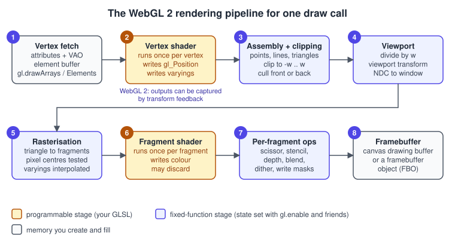
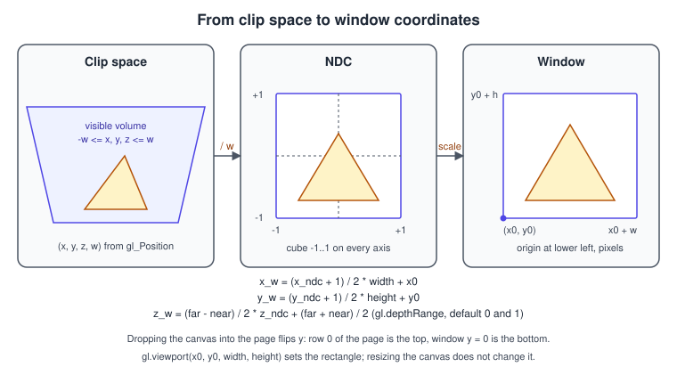
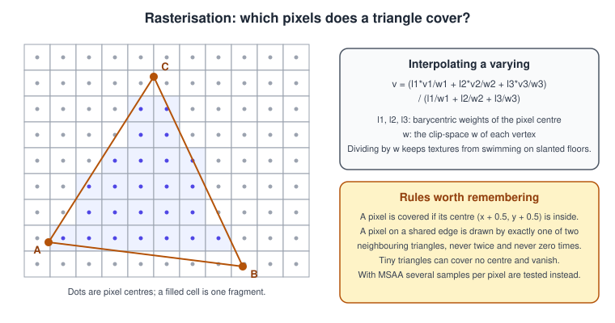
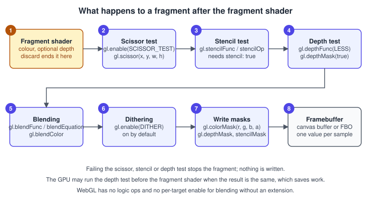
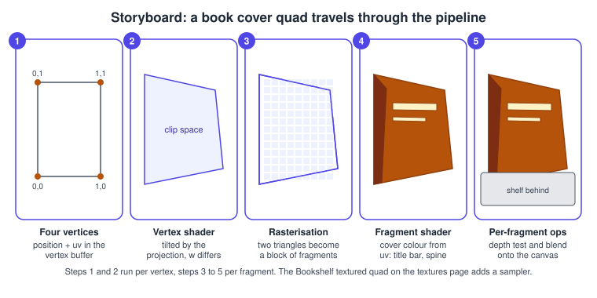

The WebGL Rendering Pipeline
|
This content was generated with the assistance of AI and should be verified against the official documentation before being relied on in production. |
Every picture a WebGL page draws goes through the same fixed sequence of stages, one draw call at a time. Two stages are programs you
write (the vertex and fragment shaders in GLSL ES); the rest is fixed-function hardware that you configure with state such as
gl.enable(gl.DEPTH_TEST). Knowing which stage does what is the difference between guessing why a triangle is invisible and knowing
that it was clipped, culled, failed the depth test or lost to the canvas compositor.
The facts were checked in November 2026 against the Khronos WebGL 1.0 and 2.0 specifications (editor’s drafts of June 2026), the MDN WebGL documentation and the OpenGL ES 3.0 specification the second version is based on. WebGL 1.0 follows OpenGL ES 2.0 and GLSL ES 1.00; WebGL 2.0 follows OpenGL ES 3.0 and GLSL ES 3.00, and is available in every current evergreen browser (Chrome 56, Firefox 51, Edge 79 and Safari 15 onward, about 97 percent of global usage according to caniuse). The examples target WebGL 2 and run in any of those browsers, in a plain HTML file served over HTTP(S) or from a local development server; no library is required. Where WebGL 1 differs, the page says so.
This page is the second step of the raw WebGL track of the Bookshelf running example. It follows the first triangle, explains what the triangle went through, and ends with a tilted, depth-tested, blended book-cover quad that previews the textured cover of Textures and Samplers. The language itself is covered in GLSL ES 1.00 and 3.00; the mathematics of the matrices in Transforms and Cameras. The API-neutral concepts live in The Rendering Pipeline; the OpenGL desktop counterpart, which has extra stages that WebGL does not expose, is The OpenGL Rendering Pipeline.
The pipeline at a glance

A draw call (gl.drawArrays, gl.drawElements and their instanced and range variants) sends the vertices of one or many primitives
down this chain. The table says what each stage consumes, what it produces and which part of the API configures it.
| Stage | Input | Output | Configured with |
|---|---|---|---|
1. Vertex fetch |
Buffers, a vertex array object (VAO), an optional element buffer |
One set of attribute values per vertex |
|
2. Vertex shader |
Attributes, uniforms, textures |
|
|
3. Primitive assembly and clipping |
Vertices and the draw mode |
Points, lines and triangles, clipped against the view volume, optionally culled |
|
4. Viewport transform |
Clip-space positions |
Window coordinates and a window-space depth |
|
5. Rasterisation |
Window-space primitives |
One fragment per covered pixel (or sample) with interpolated varyings |
|
6. Fragment shader |
Interpolated varyings, uniforms, textures |
A colour (or several), optional depth, or a |
|
7. Per-fragment operations |
A fragment and the current framebuffer contents |
An updated framebuffer, or nothing |
|
8. Framebuffer |
Written colour, depth and stencil |
Pixels in the canvas drawing buffer, or in a texture or renderbuffer if a framebuffer object is bound |
|
Compared with desktop OpenGL there is less in the middle. WebGL has no tessellation, geometry, mesh or compute stages (they are not part
of OpenGL ES 3.0), so the vertex shader feeds primitive assembly directly. WebGL 2 adds one exit: the output of the vertex shader can
be captured into a buffer with transform feedback, described near the end of this page. The same shaders and state run through
the same eight stages in WebGL 1; the differences (no VAOs and no instancing without extensions, one colour output without
WEBGL_draw_buffers) are listed where they matter.
Stage 1: vertex fetch and primitive types
Before any shader runs, the GPU assembles each vertex from the buffers the current VAO points at. The VAO stores, for every attribute slot, the buffer, component type, component count, stride, offset and divisor, plus the element buffer binding. The details are in Buffers, Attributes, Uniforms and VAOs; what matters here is that stage 1 is pure data movement and has no state of its own except that binding.
The first argument of the draw call, the draw mode, decides how vertices are grouped into primitives.
| Mode | Vertices used | Primitives produced |
|---|---|---|
|
n |
n points |
|
2n |
n separate segments |
|
n |
n - 1 connected segments |
|
n |
n segments; the last one closes the loop |
|
3n |
n separate triangles |
|
n |
n - 2 triangles, each sharing an edge with the previous one |
|
n |
n - 2 triangles around the first vertex |
There is no quad, polygon or line-adjacency mode in WebGL. A book cover is therefore drawn as a triangle strip of four vertices or as
two triangles indexed by six values. With gl.drawElements and a strip or fan, OpenGL ES 3.0 (and so WebGL 2) always treats the
maximum index value of the index type (65535 for UNSIGNED_SHORT, 4294967295 for UNSIGNED_INT) as a primitive restart marker.
Do not use that value as a real vertex index in a strip.
Limits of this stage are queried with gl.getParameter. The numbers below are the minimums the underlying OpenGL ES version guarantees;
real devices usually offer more, but test with the minimum if you want to run everywhere.
| Limit | WebGL 1 minimum | WebGL 2 minimum |
|---|---|---|
|
8 |
16 |
|
128 |
256 |
|
8 |
15 |
|
16 |
224 |
|
8 |
16 |
|
4096 by 4096 per the MDN best-practices list |
4096 by 4096 per the MDN best-practices list |
Source: MDN: WebGL best practices
Stage 2: the vertex shader
The vertex shader runs once for every vertex fetched (with an internal cache for repeated indices, so shared vertices are not always
re-run). Its one mandatory job is to write the built-in gl_Position, a four-component clip-space position. Everything else it writes
to out variables (varying in GLSL ES 1.00) is handed to the rasteriser to be interpolated.
| Built-in | Stage | Meaning | Available in |
|---|---|---|---|
|
vertex, output |
Clip-space position \( (x_c, y_c, z_c, w_c) \). Must be written. |
WebGL 1 and 2 |
|
vertex, output |
Size in pixels of a |
WebGL 1 and 2 |
|
vertex, input |
Index of the current vertex (the element index for |
WebGL 2 only |
|
vertex, input |
Index of the current instance in an instanced draw call. |
WebGL 2 only |
Because the shader owns the position, it can do anything the maths allows: rotate, project, animate a wave, skin a mesh or place a sprite. What it cannot do is create or destroy vertices (no geometry shader) or read neighbouring vertices. A shader that wants a different number of primitives needs instancing, transform feedback or a CPU rebuild.
The output of this stage is a clip-space position: a homogeneous \( (x_c, y_c, z_c, w_c) \). For a perspective camera, \( w_c \) is the (positive) distance in front of the camera, which is the number the next stages divide by. For an orthographic camera \( w_c \) is 1.
Stage 3: primitive assembly, clipping and culling
The vertices are grouped according to the draw mode and each primitive is tested against the view volume, the set of clip-space points that satisfy
\[ -w_c \le x_c \le w_c, \qquad -w_c \le y_c \le w_c, \qquad -w_c \le z_c \le w_c \]
A primitive entirely outside the volume is discarded. A primitive entirely inside passes untouched. A triangle that crosses a side is clipped: the GPU cuts it along that plane and builds one or more new triangles from the visible part, which is why a big floor that passes behind the camera does not explode. Clipping happens before the divide by \( w_c \), so vertices with \( w_c \le 0 \) (behind the camera) are handled correctly instead of producing mirrored geometry.
Three details differ from what many tutorials assume:
-
WebGL has no user clip planes, and OpenGL ES 3.0 has no
gl_ClipDistance. To cut geometry with a plane,discardfragments in the fragment shader, or use an extension from the registry where the browser offers it (see Extensions). -
The near and far planes clip the z range, so geometry nearer than the near plane disappears rather than being clamped. If a model seems to get "eaten" when the camera approaches, the near plane is too far.
-
A primitive may be culled before rasterisation by its winding. Culling is off by default.
Culling uses the orientation of a triangle in window coordinates. A triangle is front-facing if its vertices appear in
counter-clockwise order when viewed on screen (the default gl.frontFace(gl.CCW)). gl.enable(gl.CULL_FACE) turns culling on and
gl.cullFace(gl.BACK) (the default, besides FRONT and FRONT_AND_BACK) selects what is thrown away. A closed book box drawn with
back-face culling does half the fragment work, but a quad with culling enabled vanishes when viewed from behind; the example at the
end rotates its cover to show this.
// Common culling setups
gl.enable(gl.CULL_FACE);
gl.cullFace(gl.BACK); // discard triangles seen from behind (default mode)
gl.frontFace(gl.CCW); // counter-clockwise on screen means front-facing (default)
// A mirrored model (negative scale on one axis) flips the winding: flip the rule with it
gl.frontFace(gl.CW);
// Draw both faces of a single sheet, such as a page or a leaf
gl.disable(gl.CULL_FACE);In the fragment shader, the built-in gl_FrontFacing tells whether the current fragment belongs to a front face, which lets one pass
shade the two sides of a page differently with culling disabled.
Stage 4: the perspective divide and the viewport transform
Surviving primitives now go through two fixed transformations, drawn in the figure below.

The perspective divide divides each clip-space position by its own \( w_c \), giving normalised device coordinates (NDC):
\[ ( x_n, y_n, z_n ) = \left( \frac{ x_c }{ w_c }, \frac{ y_c }{ w_c }, \frac{ z_c }{ w_c } \right) \]
Inside the view volume, each NDC coordinate lies in the range from -1 to 1. WebGL follows the OpenGL convention: x points right, y points up and z runs from -1 at the near plane to +1 at the far plane. WebGPU, Metal, Direct3D and Vulkan use a different depth range (0 to 1), a fact that matters when you port shaders and matrices; see WebGPU Overview and Comparison.
The viewport transform maps NDC to window coordinates, measured in pixels of the drawing buffer. With
gl.viewport(x0, y0, width, height) and gl.depthRange(near, far):
\[ x_w = \frac{ x_n + 1 }{ 2 }\, \mathrm{ width } + x_0, \qquad y_w = \frac{ y_n + 1 }{ 2 }\, \mathrm{ height } + y_0, \qquad z_w = \frac{ far - near }{ 2 }\, z_n + \frac{ far + near }{ 2 } \]
The depth range defaults to 0 and 1, so window depth is \( z_w \in [0, 1] \), the number stored in the depth buffer. The window origin
is at the lower-left corner of the drawing buffer. Pixel row 0 is the bottom, which is opposite to the page, to getBoundingClientRect
and to 2D canvas. You flip y yourself when you convert a mouse position to a pixel (see the readback example below) and when you upload images
(UNPACK_FLIP_Y_WEBGL, see Textures and Samplers).
The viewport is not the canvas size
gl.viewport is plain state. A new context starts with the viewport equal to the drawing buffer (origin 0, 0 and size
gl.drawingBufferWidth by gl.drawingBufferHeight), and WebGL does not change it when the canvas is resized. The classic "my scene is
stretched or only fills the lower left" bug is a canvas resized without a matching gl.viewport call. Three sizes are involved:
| Size | What it is | Where it is set |
|---|---|---|
CSS size |
How large the canvas appears in the page, in CSS pixels |
CSS, |
Drawing buffer size |
The real number of pixels the GPU renders into |
|
Viewport |
The sub-rectangle of the drawing buffer the NDC square is mapped to |
|
Assigning canvas.width or canvas.height, even to the value it already has, reallocates the drawing buffer and clears it, so
only assign when the size changed. MDN recommends measuring the exact device-pixel size with a ResizeObserver and the
device-pixel-content-box option, falling back to the content box multiplied by devicePixelRatio, applying the new size at the start
of the next animation frame (not inside the observer callback, which could clear a frame that was already drawn) and passing the drawing
buffer size to gl.viewport. The example at the end of this page does exactly that. The drawing buffer may also be smaller than the
request if the browser or device cannot allocate it: always read drawingBufferWidth back.
// Lower the work without changing the layout: render fewer pixels, let the browser scale them up
canvas.width = Math.round(canvas.clientWidth * 0.5);
canvas.height = Math.round(canvas.clientHeight * 0.5);
gl.viewport(0, 0, gl.drawingBufferWidth, gl.drawingBufferHeight);
// Largest drawing buffer the context accepts
const [maxW, maxH] = gl.getParameter(gl.MAX_VIEWPORT_DIMS);Source: MDN: WebGL best practices
Viewport, scissor and clearing
The viewport transforms; it does not clip. A triangle that extends outside the viewport rectangle is still rasterised there, up to the
edge of the drawing buffer. To restrict drawing to a rectangle you need the scissor test (stage 7). The two are usually used together
for split-screen or mini-map views: viewport for where the camera image goes, scissor to keep a view from touching its neighbours.
Remember that gl.clear obeys the scissor test and the write masks, which is a regular source of "the second half of my screen never
clears" bugs.
// Two views side by side in one canvas. Scissor limits the clear and the draw to each half.
function drawSplitScreen(gl, drawScene) {
const w = gl.drawingBufferWidth;
const h = gl.drawingBufferHeight;
const half = Math.floor(w / 2);
gl.enable(gl.SCISSOR_TEST);
// Left half: the normal camera, dark background
gl.viewport(0, 0, half, h);
gl.scissor(0, 0, half, h);
gl.clearColor(0.10, 0.11, 0.14, 1.0);
gl.clear(gl.COLOR_BUFFER_BIT | gl.DEPTH_BUFFER_BIT);
drawScene('perspective', half / h);
// Right half: a second view, lighter background
gl.viewport(half, 0, w - half, h);
gl.scissor(half, 0, w - half, h);
gl.clearColor(0.18, 0.20, 0.25, 1.0);
gl.clear(gl.COLOR_BUFFER_BIT | gl.DEPTH_BUFFER_BIT);
drawScene('top-down', (w - half) / h);
gl.disable(gl.SCISSOR_TEST); // later full-frame clears must not be cropped
}Depth precision
The depth buffer stores \( z_w \) as fixed-point numbers, typically 24 bits for the depth: true context attribute (the specification
only promises at least 16 bits; ask gl.getParameter(gl.DEPTH_BITS)). For a standard perspective projection with eye-space distance
\( z \) in front of the camera and near and far distances \( n \) and \( f \), the stored depth with the default depth range is
\[ d(z) = \frac{ 1/n - 1/z }{ 1/n - 1/f } \]
which is not linear in \( z \). Almost all values are packed close to the near plane. With \( n = 0.1 \) and \( f = 100 \):
| Distance \( z \) | Stored depth \( d \) | Smallest resolvable step at 24 bits | Smallest step at 16 bits |
|---|---|---|---|
0.2 |
0.50 |
about 0.0000012 |
about 0.0003 |
1 |
0.9009 |
about 0.0000006 |
about 0.00015 |
10 |
0.9910 |
about 0.00006 |
about 0.015 |
50 |
0.9990 |
about 0.0015 |
about 0.38 |
These steps follow directly from the formula, assuming a fixed-point buffer of that many bits; real hardware may differ. The practical
rules: push the near plane out as far as the scene tolerates (moving \( n \) from 0.1 to 1 gains a factor of ten everywhere), pull the
far plane in, and never use a near distance of 0. When two surfaces closer together than the step at their distance compete, you see
z-fighting. Coplanar decals are handled with gl.polygonOffset(factor, units) after enabling gl.POLYGON_OFFSET_FILL, which nudges the
window depth of a polygon by a slope-scaled and a constant amount.
Stage 5: rasterisation
Rasterisation converts each window-space primitive into fragments, one per pixel it covers (or one per covered sample when multisampling is on). The rules for triangles are:

-
A pixel belongs to the triangle if its centre, at \( (x + 0.5, y + 0.5) \), lies inside it.
-
A pixel centre exactly on an edge shared by two triangles is given to exactly one of them. Adjacent triangles of a mesh therefore leave no gaps and no double-drawn pixels, which matters for blending. The specification does not say which of the two wins.
-
Triangles smaller than a pixel may cover no centre at all and produce no fragment, so very distant, thin geometry flickers.
-
With multisampling (
antialias: true, the default context attribute) coverage is evaluated at several sample positions per pixel and the fragment shader still runs once per pixel; the resolve produces the smoothed edge. WebGL 1.0 treatsantialiasas a hint the browser may ignore, while WebGL 2.0 requires implementations to honour thedepth,stencilandantialiasattributes.
Points produce a square of gl_PointSize pixels, and the fragment shader can read gl_PointCoord, a position inside that square from
0 to 1, which is the foundation of particle sprites such as the Bookshelf dust. Lines are drawn with a width set by gl.lineWidth, but
most implementations, including those that translate WebGL through ANGLE, support only a width of 1. gl.getParameter(gl.ALIASED_LINE_WIDTH_RANGE)
returns the real range. If you need thick lines, draw them as triangles.
Varying interpolation
Each varying leaves the vertex shader as three values, one per triangle corner. For every fragment the rasteriser computes the barycentric weights \( \lambda_1, \lambda_2, \lambda_3 \) of the pixel centre and blends the three values. Linear blending in screen space would make a texture on a floor swim, so the hardware uses the perspective-correct form
\[ v = \frac{\lambda_1 v_1 / w_1 + \lambda_2 v_2 / w_2 + \lambda_3 v_3 / w_3}{\lambda_1 / w_1 + \lambda_2 / w_2 + \lambda_3 / w_3} \]
where \( w_i \) is the clip-space \( w_c \) of each vertex. You get this for free; GLSL ES 3.00 only lets you choose among smooth (the default),
flat and centroid, covered with a figure in GLSL ES 1.00 and 3.00. Interpolated values
are not clamped, so a unit-length normal that is blended between two vertices is shorter than 1 and must be renormalised in the fragment shader.
Stage 6: the fragment shader
The fragment shader runs once per fragment. It receives the interpolated varyings, reads uniforms and textures and produces the data that goes to the framebuffer.
| Built-in | Meaning | Available in |
|---|---|---|
|
Window-space position of the fragment: \( x_w + 0.5 \), \( y_w + 0.5 \), the stored depth \( z_w \) and \( 1 / w_c \). The origin is the lower-left corner. |
WebGL 1 and 2 |
|
True for fragments of front-facing triangles. |
WebGL 1 and 2 |
|
Position inside a point sprite, 0 to 1 in x and y. |
WebGL 1 and 2 |
|
The colour output(s) in GLSL ES 1.00. Writing several needs |
WebGL 1 |
user |
The colour outputs in GLSL ES 3.00. One per colour attachment, chosen with |
WebGL 2 |
|
Overrides the fragment depth. In GLSL ES 1.00 this needs the |
WebGL 2, extension in WebGL 1 |
Three behaviours deserve a warning:
-
discardends the fragment: nothing is written to colour, depth or stencil. It is the way to cut leaf and wire textures, but it also tells the GPU that it cannot assume every covered pixel will be written, which can disable some early optimisations. -
Writing
gl_FragDepthlets you change a fragment’s depth, but the depth test can no longer be done before the shader runs, because the final depth is unknown until the shader has finished. Use it only when you need it. -
OpenGL ES 3.0 has no way to force "early" depth and stencil testing from the shader. The GPU applies it automatically when it can prove the result is the same, which usually means the shader does not
discard, does not writegl_FragDepthand blending is not required to order its writes. Drawing opaque objects front to back lets that optimisation reject hidden fragments cheaply.
The fragment shader can query screen-space derivatives (dFdx, dFdy, fwidth), built in with GLSL ES 3.00 and requiring the
OES_standard_derivatives extension in GLSL ES 1.00. The GPU shades pixels in 2 by 2 quads, so derivatives are differences between
neighbouring fragments. They are only meaningful where all four are executing, which is why placing them inside non-uniform branches gives
undefined results.
Stage 7: per-fragment operations
A fragment that came out of the shader still has to survive a fixed sequence of tests before it changes a pixel.

In the figure the pixel-ownership test, which the browser performs invisibly to keep other windows from overwriting your canvas,
is omitted. The order is fixed. A fragment that fails an earlier test never reaches the later ones, and the stencil operation chosen
for a failed test (gl.stencilOp) is applied even though the colour write is skipped.
Scissor test
gl.enable(gl.SCISSOR_TEST) and gl.scissor(x, y, width, height) restrict all writes, including gl.clear, to a rectangle in window
coordinates. The default rectangle is the drawing buffer at the time the context was created; it does not follow resizes, so reset it
after changing the canvas size if you use it.
Stencil test
The stencil buffer holds an 8-bit integer per pixel and is only available if you ask for it: getContext('webgl2', { stencil: true }),
or by attaching a depth-stencil renderbuffer to a framebuffer object. A context without stencil fails every stencil call silently
(the test always passes). gl.stencilFunc(func, ref, mask) sets the comparison, gl.stencilOp(fail, zfail, zpass) what happens to the
stored value, and the Separate variants set front and back faces independently. Typical uses are masking, portal rendering and the
outline of a picked book.
Depth test
gl.enable(gl.DEPTH_TEST) compares the fragment depth \( z_w \) with the stored value using gl.depthFunc (default gl.LESS; the
alternatives are NEVER, EQUAL, LEQUAL, GREATER, NOTEQUAL, GEQUAL and ALWAYS). If the fragment passes, gl.depthMask(true) lets
it write its depth. A common rule: draw opaque objects with depth test and depth writes on, then draw transparent objects with the test
on and gl.depthMask(false), so they are hidden behind solids but do not hide each other. Clear the depth buffer each frame with
gl.clear(gl.DEPTH_BUFFER_BIT); gl.clearDepth defaults to 1.0, the far plane. Remember that
gl.clear obeys depthMask: a mask left at false by transparent drawing makes the next frame’s depth clear do nothing.
Blending
If gl.enable(gl.BLEND) is on, the incoming colour (source, \( S \)) is combined with the stored colour (destination, \( D \)):
\[ C_{ out } = f_s S \;\mathrm{ op }\; f_d D \]
where the factors \( f_s \) and \( f_d \) are set by gl.blendFunc(src, dst) (or gl.blendFuncSeparate for colour and alpha
independently) and the operator by gl.blendEquation (FUNC_ADD, FUNC_SUBTRACT, FUNC_REVERSE_SUBTRACT, and in WebGL 2 MIN and MAX).
The factors are ZERO, ONE, SRC_COLOR, ONE_MINUS_SRC_COLOR, DST_COLOR, ONE_MINUS_DST_COLOR, SRC_ALPHA, ONE_MINUS_SRC_ALPHA,
DST_ALPHA, ONE_MINUS_DST_ALPHA, CONSTANT_COLOR, ONE_MINUS_CONSTANT_COLOR, CONSTANT_ALPHA, ONE_MINUS_CONSTANT_ALPHA and, for the
source only, SRC_ALPHA_SATURATE. gl.blendColor(r, g, b, a) sets the constant colour. WebGL forbids using a CONSTANT_COLOR factor
together with a CONSTANT_ALPHA factor in the same blend function (the call fails with an INVALID_OPERATION error), and in WebGL 1.0
blendColor clamps its arguments to 0 through 1 unless a float colour-buffer extension is enabled. In WebGL 2 gl.enable(gl.BLEND)
applies to every colour attachment; per-attachment control needs an extension where the browser offers one.
The most common recipes are:
| Effect | Call | When to use it |
|---|---|---|
Straight alpha ("over") |
|
The shader output is not multiplied by alpha. Typical for desktop OpenGL tutorials. |
Premultiplied alpha |
|
The shader outputs |
Additive glow |
|
Fire, dust and light shafts. Order-independent. |
Multiply |
|
Shadows or dirt layered over a surface. |
Colour straight, alpha separate |
|
Keeps the canvas alpha correct while blending colour as straight alpha. |
Blending is order dependent: transparent surfaces must be sorted back to front (per object, or per triangle for the strictest results),
or you use order-independent additive blending. On a context with the default alpha: true, the destination alpha is also compositing
information for the page: with a straight-alpha recipe the canvas ends up with colours that are not premultiplied while the browser
expects them to be, and edges look washed out or haloed. Either use premultiplied recipes or create the context with
premultipliedAlpha: false, understanding that it is a slower path in some browsers. Blending to floating-point colour attachments
needs EXT_float_blend for 32-bit floats and always works for 16-bit floats, according to MDN.
Dithering and write masks
gl.DITHER is enabled by default; it lets the implementation add a tiny pattern to hide banding when writing to a low-precision
colour buffer. It cannot be seen by the shader and is rarely worth disabling, except for exact pixel tests where you compare
rendered values. gl.colorMask(r, g, b, a), gl.depthMask(flag), gl.stencilMask(bits) apply last and control which channels are
written. They also apply to gl.clear.
State defaults
WebGL starts every context with the same state, and a library that leaves a state toggled leaks it to the next draw. These are the defaults of the state on this page.
| State | Default | Reset call |
|---|---|---|
Viewport |
Whole drawing buffer at creation |
|
Depth range |
0 to 1 |
|
Cull face |
Disabled; mode |
|
Scissor test |
Disabled; box covers the drawing buffer at creation |
|
Depth test |
Disabled; function |
|
Stencil test |
Disabled |
|
Blend |
Disabled; equation |
|
Dither |
Enabled |
|
Colour mask |
All channels true |
|
Clear colour |
0, 0, 0, 0 |
|
Polygon offset fill |
Disabled; factor and units 0 |
|
Stage 8: the framebuffer and the drawing buffer
Where the fragments end up depends on the bound framebuffer. With no framebuffer object bound (gl.bindFramebuffer(gl.FRAMEBUFFER, null))
they go to the drawing buffer, the colour, depth and optional stencil images the browser allocated for the canvas. With a framebuffer
object, which is the subject of Framebuffers and Render to Texture,
they go to textures or renderbuffers that you own.
There is no swapBuffers call in WebGL. The browser presents the drawing buffer to the page when the JavaScript task that drew into it
finishes, compositing it like any other element. After that composition the drawing buffer is cleared (colour to transparent
black, depth to 1, stencil to 0) unless the context was created with preserveDrawingBuffer: true. The consequences:
-
Draw the complete frame in a single task, usually inside one
requestAnimationFramecallback. Drawing in one callback and expecting the image to persist into the next, without redrawing, yields a blank canvas. -
gl.readPixelsandcanvas.toBlobmust therefore run in the same task as the drawing (or after you re-render) to see the pixels, unless you pay forpreserveDrawingBuffer: true, which can slow rendering because the browser must copy rather than swap. -
The context attribute
premultipliedAlpha: true(the default) tells the compositor that the colour channels have already been multiplied by alpha. Outputting straight-alpha colours onto such a canvas, or leaving garbage in the colour channels at alpha 0, shows bright fringes. -
gl.drawingBufferColorSpaceaccepts'srgb'(default) or'display-p3'and selects the colour space the drawing buffer is interpreted in. MDN lists it as Baseline 2024 (newly available since October 2024). Colour management is discussed in Colour Spaces, HDR and Tone Mapping. -
Calling
gl.readPixelsforces the CPU to wait for the GPU; use it for tests and tools, not every frame. Asynchronous alternatives are in Performance and Debugging.
The snippet below reads the pixel under the pointer, which also shows the y flip between page and window coordinates. It re-renders before reading so the drawing buffer is valid.
// canvas, gl and render() come from the surrounding page; render() draws one complete frame
canvas.addEventListener('pointerdown', (event) => {
const rect = canvas.getBoundingClientRect();
// page coordinates (y down, CSS pixels) to drawing-buffer pixels (y up)
const x = Math.floor((event.clientX - rect.left) * canvas.width / rect.width);
const y = canvas.height - 1 - Math.floor((event.clientY - rect.top) * canvas.height / rect.height);
render(); // same task as the read, so the buffer is not cleared yet
const rgba = new Uint8Array(4);
gl.readPixels(x, y, 1, 1, gl.RGBA, gl.UNSIGNED_BYTE, rgba);
console.log(`pixel (${x}, ${y}) = rgba(${rgba.join(', ')})`);
});Leaving the pipeline early: transform feedback
WebGL 2 lets the vertex shader output be written into a buffer instead of (or as well as) being rasterised. With
gl.enable(gl.RASTERIZER_DISCARD) stages 4 to 8 are skipped entirely, which turns the vertex shader into a small compute step used for
particle simulation and GPU skinning. The program must name the captured varyings before it is linked. The complete function below
doubles four numbers on the GPU and reads them back; the full treatment is in
WebGL 2 Advanced Features.
function doubleOnGpu(gl, values) {
const vs = `#version 300 es
in float aValue;
out float vDoubled;
void main() { vDoubled = aValue * 2.0; }`;
const fs = `#version 300 es
precision mediump float;
out vec4 outColor;
void main() { outColor = vec4(0.0); }`;
const compile = (type, source) => {
const shader = gl.createShader(type);
gl.shaderSource(shader, source);
gl.compileShader(shader);
if (!gl.getShaderParameter(shader, gl.COMPILE_STATUS)) throw new Error(gl.getShaderInfoLog(shader));
return shader;
};
const program = gl.createProgram();
gl.attachShader(program, compile(gl.VERTEX_SHADER, vs));
gl.attachShader(program, compile(gl.FRAGMENT_SHADER, fs));
gl.transformFeedbackVaryings(program, ['vDoubled'], gl.SEPARATE_ATTRIBS); // before linking
gl.linkProgram(program);
if (!gl.getProgramParameter(program, gl.LINK_STATUS)) throw new Error(gl.getProgramInfoLog(program));
const input = gl.createBuffer();
gl.bindBuffer(gl.ARRAY_BUFFER, input);
gl.bufferData(gl.ARRAY_BUFFER, new Float32Array(values), gl.STATIC_DRAW);
const vao = gl.createVertexArray();
gl.bindVertexArray(vao);
const loc = gl.getAttribLocation(program, 'aValue');
gl.enableVertexAttribArray(loc);
gl.vertexAttribPointer(loc, 1, gl.FLOAT, false, 0, 0);
const output = gl.createBuffer();
gl.bindBuffer(gl.ARRAY_BUFFER, output);
gl.bufferData(gl.ARRAY_BUFFER, values.length * 4, gl.STATIC_READ);
const tf = gl.createTransformFeedback();
gl.bindTransformFeedback(gl.TRANSFORM_FEEDBACK, tf);
gl.bindBufferBase(gl.TRANSFORM_FEEDBACK_BUFFER, 0, output);
gl.useProgram(program);
gl.enable(gl.RASTERIZER_DISCARD); // skip rasterisation and everything after it
gl.beginTransformFeedback(gl.POINTS);
gl.drawArrays(gl.POINTS, 0, values.length);
gl.endTransformFeedback();
gl.disable(gl.RASTERIZER_DISCARD);
gl.bindBufferBase(gl.TRANSFORM_FEEDBACK_BUFFER, 0, null); // a buffer cannot stay bound as feedback target
gl.bindTransformFeedback(gl.TRANSFORM_FEEDBACK, null);
const result = new Float32Array(values.length);
gl.bindBuffer(gl.ARRAY_BUFFER, output);
gl.getBufferSubData(gl.ARRAY_BUFFER, 0, result); // blocks until the GPU is done
return result;
}
// doubleOnGpu(gl, [1, 2, 3, 4]) returns Float32Array [2, 4, 6, 8]Putting it together: the Bookshelf cover quad
The storyboard follows one book cover through the whole chain. Four vertices carry a position and a texture coordinate; the vertex shader rotates and projects them, so the quad is no longer a rectangle; the rasteriser turns it into fragments; the fragment shader paints the leather, the spine strip and two title bars from the interpolated coordinate (a procedural stand-in for the cover texture, which arrives in the textures page); and the per-fragment operations depth-test it and blend a translucent glass band over it.

The complete page below creates a WebGL 2 context and draws the rotating cover and a translucent band in front of it, repeating every step of the page in about 150 lines:
-
the vertex shader builds the perspective projection by hand, so the clip-space maths of stage 4 is visible (the next pages replace this with matrices);
-
culling is on, so the cover vanishes while its back faces the camera;
-
depth testing keeps the band in front of the cover, and the band is drawn last with
depthMask(false)and premultiplied blending; -
a
ResizeObserverkeeps the drawing buffer and the viewport in step with the layout, applied at the start of each frame.
<!doctype html>
<html lang="en">
<head>
<meta charset="utf-8">
<title>Bookshelf step 2: a cover quad through the pipeline</title>
<style>
html, body { margin: 0; height: 100%; background: #20242c; }
canvas { width: 100%; height: 100%; display: block; }
</style>
</head>
<body>
<canvas id="gl"></canvas>
<script type="module">
const canvas = document.getElementById('gl');
const gl = canvas.getContext('webgl2'); // default attributes: alpha, depth, antialias, premultipliedAlpha
if (!gl) throw new Error('WebGL 2 is not available in this browser');
const vertexSource = `#version 300 es
layout(location = 0) in vec3 aPosition;
layout(location = 1) in vec2 aUv;
uniform float uAngle; // rotation around the y axis, radians
uniform float uAspect; // drawing buffer width / height
uniform float uDepth; // distance in front of the camera
uniform vec2 uScale;
out vec2 vUv;
void main() {
float c = cos(uAngle);
float s = sin(uAngle);
vec3 p = vec3(aPosition.xy * uScale, aPosition.z);
p = vec3(c * p.x + s * p.z, p.y, -s * p.x + c * p.z);
p.z -= uDepth; // the camera looks down -z
const float f = 1.7320508; // 1 / tan(30 degrees), a 60 degree vertical field of view
const float n = 0.1;
const float fr = 20.0;
gl_Position = vec4(f / uAspect * p.x,
f * p.y,
(fr + n) / (n - fr) * p.z + 2.0 * fr * n / (n - fr),
-p.z); // w is the distance in front of the camera
vUv = aUv;
}`;
const fragmentSource = `#version 300 es
precision mediump float;
in vec2 vUv;
uniform int uMode; // 0 = book cover, 1 = glass band
uniform float uAlpha;
out vec4 outColor;
void main() {
if (uMode == 1) {
outColor = vec4(vec3(0.55, 0.80, 1.00) * uAlpha, uAlpha); // premultiplied alpha
return;
}
vec3 leather = vec3(0.60, 0.27, 0.10);
vec3 colour = mix(leather, vec3(0.42, 0.17, 0.06), step(vUv.x, 0.08)); // spine strip
float title = step(0.62, vUv.y) * step(vUv.y, 0.70) * step(0.20, vUv.x) * step(vUv.x, 0.85);
float author = step(0.50, vUv.y) * step(vUv.y, 0.54) * step(0.30, vUv.x) * step(vUv.x, 0.70);
colour = mix(colour, vec3(0.99, 0.93, 0.70), max(title, author));
float edge = smoothstep(0.0, 0.03, min(min(vUv.x, 1.0 - vUv.x), min(vUv.y, 1.0 - vUv.y)));
outColor = vec4(colour * mix(0.6, 1.0, edge), 1.0);
}`;
function compile(type, source) {
const shader = gl.createShader(type);
gl.shaderSource(shader, source);
gl.compileShader(shader);
if (!gl.getShaderParameter(shader, gl.COMPILE_STATUS)) {
throw new Error(gl.getShaderInfoLog(shader));
}
return shader;
}
const program = gl.createProgram();
gl.attachShader(program, compile(gl.VERTEX_SHADER, vertexSource));
gl.attachShader(program, compile(gl.FRAGMENT_SHADER, fragmentSource));
gl.linkProgram(program);
if (!gl.getProgramParameter(program, gl.LINK_STATUS)) throw new Error(gl.getProgramInfoLog(program));
const uniform = (name) => gl.getUniformLocation(program, name);
const uAngle = uniform('uAngle'), uAspect = uniform('uAspect'), uDepth = uniform('uDepth');
const uScale = uniform('uScale'), uMode = uniform('uMode'), uAlpha = uniform('uAlpha');
// Interleaved x, y, z, u, v: a triangle strip of four vertices, counter-clockwise seen from +z
const vertices = new Float32Array([
-0.45, -0.60, 0, 0, 0,
0.45, -0.60, 0, 1, 0,
-0.45, 0.60, 0, 0, 1,
0.45, 0.60, 0, 1, 1,
]);
const vao = gl.createVertexArray();
gl.bindVertexArray(vao);
const vbo = gl.createBuffer();
gl.bindBuffer(gl.ARRAY_BUFFER, vbo);
gl.bufferData(gl.ARRAY_BUFFER, vertices, gl.STATIC_DRAW);
gl.enableVertexAttribArray(0);
gl.vertexAttribPointer(0, 3, gl.FLOAT, false, 20, 0);
gl.enableVertexAttribArray(1);
gl.vertexAttribPointer(1, 2, gl.FLOAT, false, 20, 12);
// Resizing: measure in the observer, apply at the start of the next frame
let pendingWidth = Math.max(1, Math.round(canvas.clientWidth * devicePixelRatio));
let pendingHeight = Math.max(1, Math.round(canvas.clientHeight * devicePixelRatio));
const observer = new ResizeObserver((entries) => {
for (const entry of entries) {
if (entry.devicePixelContentBoxSize) {
pendingWidth = entry.devicePixelContentBoxSize[0].inlineSize;
pendingHeight = entry.devicePixelContentBoxSize[0].blockSize;
} else {
pendingWidth = Math.round(entry.contentBoxSize[0].inlineSize * devicePixelRatio);
pendingHeight = Math.round(entry.contentBoxSize[0].blockSize * devicePixelRatio);
}
}
});
try {
observer.observe(canvas, { box: 'device-pixel-content-box' });
} catch {
observer.observe(canvas, { box: 'content-box' });
}
function resizeIfNeeded() {
const [maxW, maxH] = gl.getParameter(gl.MAX_VIEWPORT_DIMS);
const w = Math.max(1, Math.min(pendingWidth, maxW));
const h = Math.max(1, Math.min(pendingHeight, maxH));
if (canvas.width !== w || canvas.height !== h) { // assigning clears the buffer, so only when needed
canvas.width = w;
canvas.height = h;
}
}
function frame(time) {
resizeIfNeeded();
const w = gl.drawingBufferWidth;
const h = gl.drawingBufferHeight;
gl.viewport(0, 0, w, h); // the viewport does not follow the canvas by itself
gl.clearColor(0.13, 0.14, 0.17, 1.0);
gl.clearDepth(1.0);
gl.enable(gl.DEPTH_TEST);
gl.depthMask(true);
gl.clear(gl.COLOR_BUFFER_BIT | gl.DEPTH_BUFFER_BIT);
gl.enable(gl.CULL_FACE); // the cover disappears while it faces away
gl.useProgram(program);
gl.bindVertexArray(vao);
gl.uniform1f(uAspect, w / h);
// 1. the opaque cover: depth test and depth writes on, blending off
gl.disable(gl.BLEND);
gl.uniform1i(uMode, 0);
gl.uniform1f(uAngle, time * 0.0007);
gl.uniform1f(uDepth, 3.0);
gl.uniform2f(uScale, 1.0, 1.0);
gl.drawArrays(gl.TRIANGLE_STRIP, 0, 4);
// 2. the translucent glass band in front: tested against depth but not written to it, premultiplied blend
gl.enable(gl.BLEND);
gl.blendFunc(gl.ONE, gl.ONE_MINUS_SRC_ALPHA);
gl.depthMask(false);
gl.uniform1i(uMode, 1);
gl.uniform1f(uAlpha, 0.35);
gl.uniform1f(uAngle, 0.0);
gl.uniform1f(uDepth, 2.2);
gl.uniform2f(uScale, 1.8, 0.35);
gl.drawArrays(gl.TRIANGLE_STRIP, 0, 4);
gl.depthMask(true); // restore, or the next frame's depth clear is ignored
gl.disable(gl.BLEND);
requestAnimationFrame(frame);
}
requestAnimationFrame(frame);
</script>
</body>
</html>Source: MDN: WebGL model view projection
Run it with any static server (for example python3 -m http.server); an ES module needs HTTP rather than the file: scheme in most browsers.
Draw call checklist
When a draw call shows nothing, walk the stages in order. Most problems are found in the first three questions.
-
Is the program valid and current? Check
gl.getProgramParameter(program, gl.LINK_STATUS)and the shader info logs, callgl.useProgram, and readgl.getError()once while debugging. -
Are the attributes feeding the shader? The VAO is bound, the buffer is bound while
vertexAttribPointerruns, the attribute array is enabled, and the draw count is not 0. -
Do the clip-space coordinates fall inside the view volume? Print the output of the matrix chain; a point is visible only when each of \( x_c, y_c, z_c \) is between \( -w_c \) and \( w_c \). A forgotten uniform is zero and collapses everything to the origin.
-
Is the winding right for the culling state? Disable culling to test.
-
Is the viewport sensible? A viewport of 0 by 0 or a stale size after a resize draws nothing visible.
-
Does the fragment survive? Try disabling depth test, scissor and blending, and write a solid colour from the fragment shader.
-
Is the canvas presented? Draw inside the same task as the frame and avoid a non-opaque canvas covering something else in the page.
Common mistakes
-
Assuming
gl.viewportfollows the canvas size, or settingcanvas.widthevery frame (which clears the buffer and wastes memory). -
Forgetting that the y axis points up in window coordinates, so pointer positions and image rows are flipped relative to the page.
-
Leaving
gl.depthMask(false)after drawing transparent objects, so the next frame’s depth clear does nothing and everything flickers. -
Using a near plane of 0 or a huge far/near ratio, which wastes depth precision and produces z-fighting.
-
Using straight-alpha blending on a premultiplied canvas, which gives bright halos around semi-transparent edges.
-
Not renormalising interpolated normals in the fragment shader.
-
Calling
gl.readPixelsafter the frame was presented, or every frame, which returns zeros or stalls the pipeline. -
Using
gl.lineWidthfor thick lines. Only a width of 1 is portable. -
Expecting a stencil buffer from a context created without
stencil: true. -
Treating 16-bit depth as enough for a scene with a large far/near ratio. Query
DEPTH_BITSand keep ratios modest.
Performance notes
-
The cost is usually dominated by fragment work: overdraw (the same pixel shaded many times), expensive shaders and high-resolution buffers. Lowering the drawing buffer size, drawing opaque objects front to back, culling back faces and keeping shaders short each help more than reducing vertices.
-
State changes that alter the pipeline (program, blend, depth) are not free; sort draw calls by program and state. See Performance and Debugging.
-
Do not call blocking functions such as
gl.getErrororgl.readPixelsin the frame loop of a shipped application. -
Prefer
alpha: falseonly after measuring: MDN notes that an RGB drawing buffer may be emulated on top of RGBA on some platforms and can cost more, and suggests writing alpha 1.0 from the shader instead. -
drawingBufferWidthcan exceed what the device handles well at highdevicePixelRatio; consider capping the ratio at 2.
Where older material is outdated
| Older statement | Today |
|---|---|
PAR chapters 1 to 3 explain the pipeline for WebGL 1.0 only, with one colour output and shaders in GLSL ES 1.00 ( |
The stages are unchanged. WebGL 2 adds integer and multiple colour outputs, |
PAR chapter 7 describes WebGL as unavailable in Internet Explorer, behind a developer toggle in Safari and inside iOS only through iAd. |
WebGL 2 runs in every current evergreen browser, including Safari and iOS 15 and later. Internet Explorer is retired. |
Tutorials from the WebGL 1 era call |
Use |
Examples copied from desktop OpenGL use |
The canvas is premultiplied by default, so premultiplied blending is the better default; see the blending table. |
Older guides assume depth bits, |
WebGL 2.0 requires the implementation to honour |
Recent changes
| When | Change |
|---|---|
January 2017 onward |
WebGL 2.0 (OpenGL ES 3.0) shipped in Chrome 56, then Firefox 51, Edge 79 and finally Safari 15 in 2021. |
June 2026 |
The WebGL 1.0 and 2.0 specification editor’s drafts were last updated; the drawing-buffer and context rules above are current to them. |
October 2024 |
|
WebGL 2.0 specification |
The |
See it in
-
The Rendering Pipeline (the API-neutral concept page)
-
The OpenGL Rendering Pipeline (desktop OpenGL stages)
-
First Triangle in WebGL 2 and Canvas and WebGL in the Browser for a shorter introduction
-
OpenGL and WebGL for how the two APIs differ